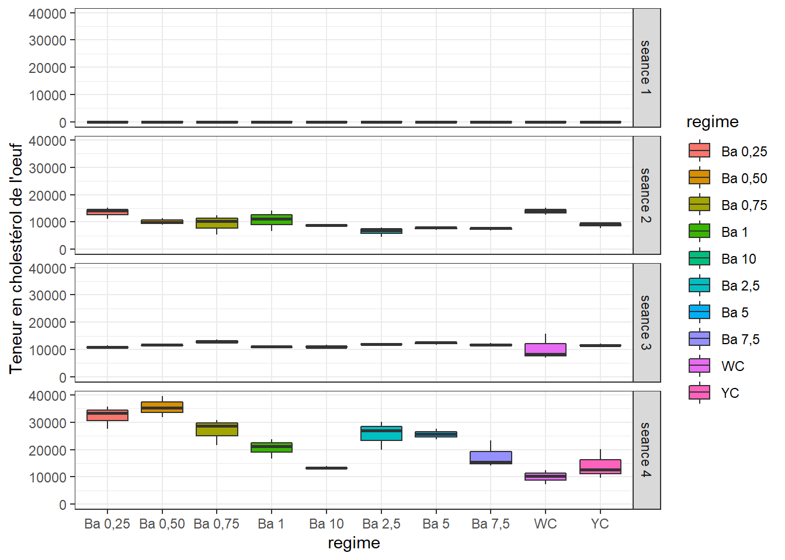
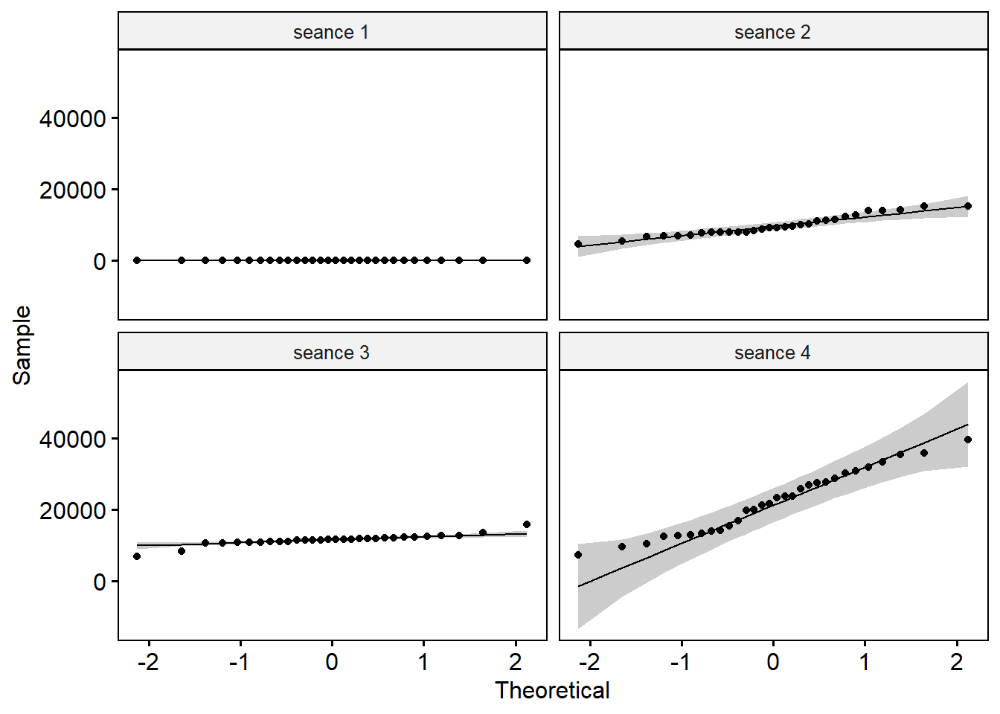
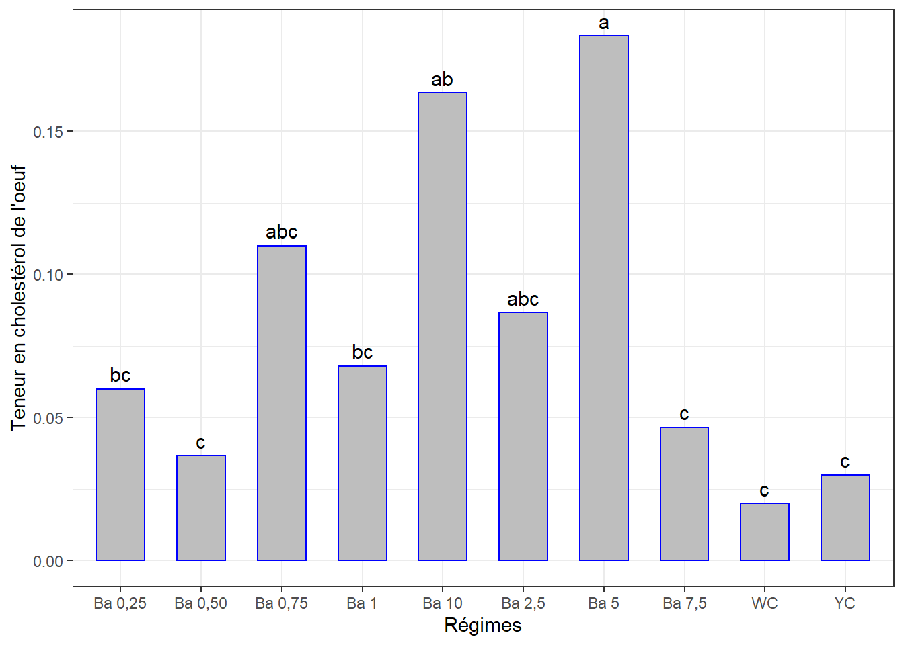
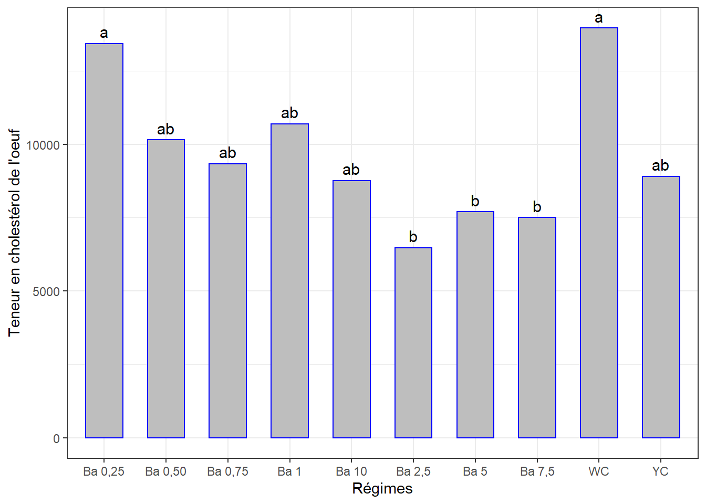
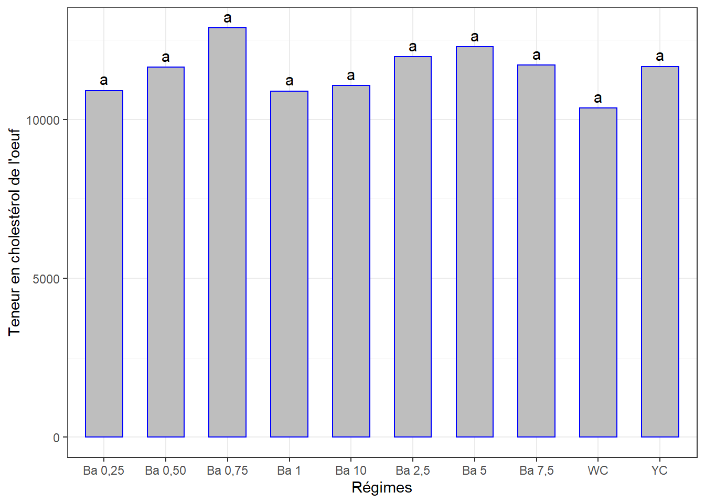
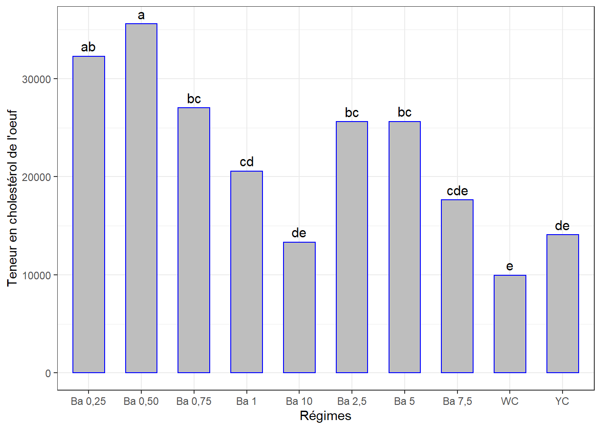
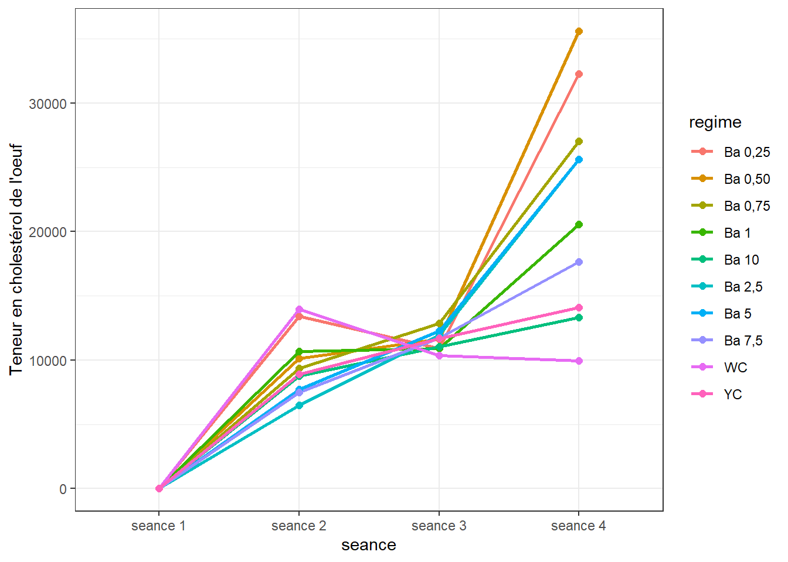
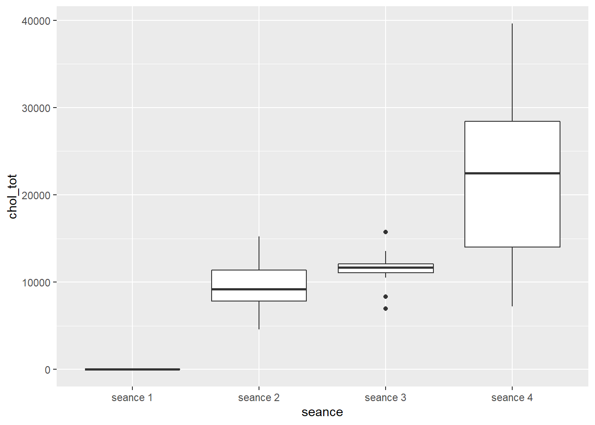

Chapitre 16 Teneur en cholestérol des oeufs
La démarche sera la même que celle des chapitres précédents. Il se peut qu’il y ait moins de commentaires.
Même jeu de données oeuf.csv qui contient différentes mesures dont les Teneurs en cholestérol des oeufs, mesurées en 4 séances. Mêmes traitements (régimes).
La question est de savoir si les différents régimes induisent des teneurs en cholestérol des oeufs significativement différentes avec le temps.
Mais chaque traitement n’ayant pas été appliqué sur tous les groupes d’oiseaux, l’ANOVA à mesures répétées ne pourrait pas être appliquée. Nous comparerons les effets des traitements séance par séance, puis à l’aide d’une figure on appréciera s’il y a une évolution de cet indice en fonction du temps.
16.1 Les données
cho <- read_csv("data/oeuf.csv")
cho <- cho %>%
select(seance, regime, no_oeuf, chol_tot) %>%
mutate(id = rep(1:30, 5), .before = 1) %>%
convert_as_factor(id, seance, regime) %>%
filter(seance != "seance 5")Le tableau a été préalablement structuré en format long en Excel. J’ai ajouté un identifiant (id) pour les échantillons des séances.
## Rows: 120
## Columns: 5
## $ id <fct> 1, 2, 3, 4, 5, 6, 7, 8, 9, 10, 11, 12, 13, 14, 15, 16, 17, 18~
## $ seance <fct> seance 1, seance 1, seance 1, seance 1, seance 1, seance 1, s~
## $ regime <fct> "Ba 0,25", "Ba 0,25", "Ba 0,25", "Ba 0,50", "Ba 0,50", "Ba 0,~
## $ no_oeuf <dbl> 1, 2, 3, 1, 2, 3, 1, 2, 3, 1, 2, 3, 1, 2, 3, 1, 2, 3, 1, 2, 3~
## $ chol_tot <dbl> 0.060, 0.070, 0.050, 0.040, 0.010, 0.060, 0.070, 0.180, 0.080~16.2 Visualisation boxplots
bxp <- ggplot(cho, aes(x = regime, y = chol_tot, fill = regime)) +
geom_boxplot() +
facet_grid(seance ~ .) +
theme(axis.text.x = element_text(angle = 90, color = "bchok", vjust = 0.5, hjust = 1)) +
ylab("Teneur en cholestérol de l'oeuf") +
theme_bw()
bxp
=> Variations notables entre les traitements pour certaines séances.
16.3 Détection des observations aberrantes extrêmes
## [1] seance regime id no_oeuf chol_tot is.outlier is.extreme
## <0 rows> (or 0-length row.names)=> Pas d’observations aberrantes extrêmes pour toutes les séances.
16.4 Conditions de l’ANOVA
16.4.1 Normalité
Si les données sont normalement distribuées, la p-value de Shapiro-Wilk doit être supérieure à 0,05 pour chaque régime.
## # A tibble: 4 x 4
## seance variable statistic p
## <fct> <chr> <dbl> <dbl>
## 1 seance 1 chol_tot 0.905 0.0113
## 2 seance 2 chol_tot 0.947 0.143
## 3 seance 3 chol_tot 0.866 0.00135
## 4 seance 4 chol_tot 0.966 0.447=> Cette hypothèse n’est pas respectée pour toutes les séances. Mais on verra bien le comportement des résidus de l’ANOVA.
Créer des QQ-plots pour chaque point par séance

On explorera les données séance par séance pour palier au problème de normalité.
16.4.2 Homogénéité des variances
## # A tibble: 4 x 5
## seance df1 df2 statistic p
## <fct> <int> <int> <dbl> <dbl>
## 1 seance 1 9 20 0.570 0.806
## 2 seance 2 9 20 1.13 0.388
## 3 seance 3 9 20 1.34 0.281
## 4 seance 4 9 20 0.371 0.936=> Toutes les valeurs p sont > 0.05 => toutes les variances sont homogènes.
16.5 ANOVA à 1 facteur séance par séance
16.5.1 Séance 1
## [1] id seance regime no_oeuf chol_tot is.outlier is.extreme
## <0 rows> (or 0-length row.names)=> Les observations des régimes au YC et WC sont supposées extrêmes par rapport aux autres. Mais non exclues.
16.5.1.1 Le modèle
## Anova Table (Type II tests)
##
## Response: chol_tot
## Sum Sq Df F value Pr(>F)
## regime 0.084592 9 4.6672 0.001992 **
## Residuals 0.040277 20
## ---
## Signif. codes: 0 '***' 0.001 '**' 0.01 '*' 0.05 '.' 0.1 ' ' 1La p-value < 0.01 => différence très significative entre les effets d’au moins 2 régimes sur la teneur en cholestérol des oeufs.
## # A tibble: 1 x 3
## variable statistic p.value
## <chr> <dbl> <dbl>
## 1 residuals(lm1) 0.977 0.747=> Normalité Okay.
16.5.1.2 Comparaisons par paires
cm1 <- (SNK.test(lm1, "regime", group = TRUE))$groups %>%
mutate(regime = rownames(.)) %>%
select(regime, chol_tot, groups) %>%
as_tibble()
cm1## # A tibble: 10 x 3
## regime chol_tot groups
## <chr> <dbl> <chr>
## 1 Ba 5 0.183 a
## 2 Ba 10 0.163 ab
## 3 Ba 0,75 0.11 abc
## 4 Ba 2,5 0.0867 abc
## 5 Ba 1 0.068 bc
## 6 Ba 0,25 0.06 bc
## 7 Ba 7,5 0.0467 c
## 8 Ba 0,50 0.0367 c
## 9 YC 0.03 c
## 10 WC 0.02 cggplot(data = cm1, mapping = aes(x = regime, y = chol_tot)) +
geom_bar(stat = "identity", color = "blue", fill = "grey", width = 0.6) +
#ylim(0, 0.5) +
geom_text(aes(label = groups), vjust = -0.5, size = 4) +
xlab("Régimes") + ylab("Teneur en cholestérol de l'oeuf") +
theme(axis.text.x = element_text(angle = 45, color = "black", vjust = 1, hjust = 1)) +
theme_bw()
16.5.2 Séance 2
16.5.2.1 Le modèle
## [1] id seance regime no_oeuf chol_tot is.outlier is.extreme
## <0 rows> (or 0-length row.names)=> Pas d’observations supossées extrêmes
## Anova Table (Type II tests)
##
## Response: chol_tot
## Sum Sq Df F value Pr(>F)
## regime 162083966 9 4.6309 0.002085 **
## Residuals 77779638 20
## ---
## Signif. codes: 0 '***' 0.001 '**' 0.01 '*' 0.05 '.' 0.1 ' ' 1La p-value est < 0.01 => différence très significative entre les effetes d’au moins 2 régimes sur la teneur en protéines des oeufs.
## # A tibble: 1 x 3
## variable statistic p.value
## <chr> <dbl> <dbl>
## 1 residuals(lm2) 0.939 0.0865=> Normalité Okay.
16.5.2.2 Comparaisons par paires
cm2 <- (SNK.test(lm2, "regime", group = TRUE))$groups %>%
mutate(regime = rownames(.)) %>%
select(regime, chol_tot, groups) %>%
as_tibble()
cm2## # A tibble: 10 x 3
## regime chol_tot groups
## <chr> <dbl> <chr>
## 1 WC 13954. a
## 2 Ba 0,25 13427. a
## 3 Ba 1 10693. ab
## 4 Ba 0,50 10146. ab
## 5 Ba 0,75 9335. ab
## 6 YC 8909. ab
## 7 Ba 10 8761. ab
## 8 Ba 5 7698. b
## 9 Ba 7,5 7502. b
## 10 Ba 2,5 6478. bVisualisation des groupes
ggplot(data = cm2, mapping = aes(x = regime, y = chol_tot)) +
geom_bar(stat = "identity", color = "blue", fill = "grey", width = 0.6) +
#ylim(0, 40) +
geom_text(aes(label = groups), vjust = -0.5, size = 4) +
xlab("Régimes") + ylab("Teneur en cholestérol de l'oeuf") +
theme(axis.text.x = element_text(angle = 45, color = "bchok", vjust = 1, hjust = 1)) +
theme_bw()
16.5.3 Séance 3
## # A tibble: 3 x 7
## id seance regime no_oeuf chol_tot is.outlier is.extreme
## <fct> <fct> <fct> <dbl> <dbl> <lgl> <lgl>
## 1 28 seance 3 WC 1 8353. TRUE FALSE
## 2 29 seance 3 WC 2 6949. TRUE TRUE
## 3 30 seance 3 WC 3 15739. TRUE TRUE=> Tout le maïs blanc ……, mais on ne peut exclure tout un traitement !
16.5.3.1 Le modèle
## Anova Table (Type II tests)
##
## Response: chol_tot
## Sum Sq Df F value Pr(>F)
## regime 15093797 9 0.7003 0.7016
## Residuals 47899487 20La p-value > 0.05 => Pas de différence significative entre les effetes des 2 régimes.
## # A tibble: 1 x 3
## variable statistic p.value
## <chr> <dbl> <dbl>
## 1 residuals(lm3) 0.657 0.000000390=> Normalité pas respectée.
## Anova Table (Type II tests)
##
## Response: log(chol_tot)
## Sum Sq Df F value Pr(>F)
## regime 0.16470 9 0.9344 0.5177
## Residuals 0.39168 20## # A tibble: 1 x 3
## variable statistic p.value
## <chr> <dbl> <dbl>
## 1 residuals(lm3_log) 0.638 0.000000223=> Normalité toujours pas respectée
=> Kruskal-Wallis
## # A tibble: 1 x 6
## .y. n statistic df p method
## * <chr> <int> <dbl> <int> <dbl> <chr>
## 1 chol_tot 30 17.5 9 0.042 Kruskal-Wallis=> Valeur-p < 0.05, ce qui signifie qu’il existe des différences entre les effets d’au moins 2 régimes selon ce test.
16.5.3.2 Comparaisons par paires
Test de Dunn
cho3 %>%
dunn_test(chol_tot ~ regime, p.adjust.method = "bonferroni") %>%
select(group1, group2, p, p.adj, p.adj.signif) %>%
filter(p.adj.signif != "ns")## # A tibble: 0 x 5
## # ... with 5 variables: group1 <chr>, group2 <chr>, p <dbl>, p.adj <dbl>,
## # p.adj.signif <chr>=> Mais cette méthode alternative ne distingue pas de groupes bien qu’elle annonce des probables différences.
=> Continuons en supposant toutes les conditions de l’ANOVA remplies.
cm3 <- (SNK.test(lm3, "regime", group = TRUE))$groups %>%
mutate(regime = rownames(.)) %>%
select(regime, chol_tot, groups) %>%
as_tibble()
cm3## # A tibble: 10 x 3
## regime chol_tot groups
## <chr> <dbl> <chr>
## 1 Ba 0,75 12873. a
## 2 Ba 5 12276. a
## 3 Ba 2,5 11965. a
## 4 Ba 7,5 11704. a
## 5 YC 11659. a
## 6 Ba 0,50 11634. a
## 7 Ba 10 11061. a
## 8 Ba 0,25 10903. a
## 9 Ba 1 10888. a
## 10 WC 10347. a… Et la visualisation graphique :
ggplot(data = cm3, mapping = aes(x = regime, y = chol_tot)) +
geom_bar(stat = "identity", color = "blue", fill = "grey", width = 0.6) +
geom_text(aes(label = groups), vjust = -0.5, size = 4) +
#ylim(0, 40) +
xlab("Régimes") + ylab("Teneur en cholestérol de l'oeuf") +
theme(axis.text.x = element_text(angle = 45, color = "bchok", vjust = 1, hjust = 1)) +
theme_bw()
16.5.4 Séance 4
## [1] id seance regime no_oeuf chol_tot is.outlier is.extreme
## <0 rows> (or 0-length row.names)16.5.4.1 Le modèle
## Anova Table (Type II tests)
##
## Response: chol_tot
## Sum Sq Df F value Pr(>F)
## regime 1934886574 9 13.524 1.061e-06 ***
## Residuals 317935774 20
## ---
## Signif. codes: 0 '***' 0.001 '**' 0.01 '*' 0.05 '.' 0.1 ' ' 1La p-value < 0.01 => différence très significative entre les effets d’au moins 2 régimes sur la teneur en cholestérol des oeufs.
## # A tibble: 1 x 3
## variable statistic p.value
## <chr> <dbl> <dbl>
## 1 residuals(lm4) 0.971 0.558=> Normalité Okay.
16.5.4.2 Comparaisons par paires
cm4 <- (SNK.test(lm4, "regime", group = TRUE))$groups %>%
mutate(regime = rownames(.)) %>%
select(regime, chol_tot, groups) %>%
as_tibble()
cm4## # A tibble: 10 x 3
## regime chol_tot groups
## <chr> <dbl> <chr>
## 1 Ba 0,50 35587. a
## 2 Ba 0,25 32269. ab
## 3 Ba 0,75 27016. bc
## 4 Ba 5 25635. bc
## 5 Ba 2,5 25604. bc
## 6 Ba 1 20568. cd
## 7 Ba 7,5 17632. cde
## 8 YC 14073. de
## 9 Ba 10 13338. de
## 10 WC 9966. eVisualisation des groupes
ggplot(data = cm4, mapping = aes(x = regime, y = chol_tot)) +
geom_bar(stat = "identity", color = "blue", fill = "grey", width = 0.6) +
#ylim(0, 40) +
geom_text(aes(label = groups), vjust = -0.5, size = 4) +
xlab("Régimes") + ylab("Teneur en cholestérol de l'oeuf") +
theme(axis.text.x = element_text(angle = 45, color = "bchok", vjust = 1, hjust = 1)) +
theme_bw()
16.6 Évolution de la teneur en cholestérol des oeufs par régime au cours du temps
16.6.1 Sommaire
cho_ic <- summarySE(cho,
measurevar = "chol_tot",
groupvars = c("seance", "regime"),
na.rm = TRUE)
cho_ic## seance regime N chol_tot sd se ci
## 1 seance 1 Ba 0,25 3 6.000000e-02 1.000000e-02 5.773503e-03 2.484138e-02
## 2 seance 1 Ba 0,50 3 3.666667e-02 2.516611e-02 1.452966e-02 6.251609e-02
## 3 seance 1 Ba 0,75 3 1.100000e-01 6.082763e-02 3.511885e-02 1.511042e-01
## 4 seance 1 Ba 1 3 6.800000e-02 5.892368e-02 3.401960e-02 1.463745e-01
## 5 seance 1 Ba 10 3 1.633333e-01 4.725816e-02 2.728451e-02 1.173958e-01
## 6 seance 1 Ba 2,5 3 8.666667e-02 7.094599e-02 4.096069e-02 1.762396e-01
## 7 seance 1 Ba 5 3 1.833333e-01 4.163332e-02 2.403701e-02 1.034229e-01
## 8 seance 1 Ba 7,5 3 4.666667e-02 5.507571e-02 3.179797e-02 1.368156e-01
## 9 seance 1 WC 3 2.000000e-02 1.000000e-02 5.773503e-03 2.484138e-02
## 10 seance 1 YC 3 3.000000e-02 1.000000e-02 5.773503e-03 2.484138e-02
## 11 seance 2 Ba 0,25 3 1.342660e+04 2.099248e+03 1.212002e+03 5.214822e+03
## 12 seance 2 Ba 0,50 3 1.014599e+04 1.183180e+03 6.831093e+02 2.939182e+03
## 13 seance 2 Ba 0,75 3 9.334955e+03 3.590876e+03 2.073193e+03 8.920230e+03
## 14 seance 2 Ba 1 3 1.069343e+04 3.741979e+03 2.160432e+03 9.295590e+03
## 15 seance 2 Ba 10 3 8.760743e+03 4.962805e+02 2.865277e+02 1.232829e+03
## 16 seance 2 Ba 2,5 3 6.478144e+03 1.712845e+03 9.889113e+02 4.254942e+03
## 17 seance 2 Ba 5 3 7.697995e+03 4.494118e+02 2.594680e+02 1.116401e+03
## 18 seance 2 Ba 7,5 3 7.502079e+03 4.959087e+02 2.863130e+02 1.231905e+03
## 19 seance 2 WC 3 1.395377e+04 1.301703e+03 7.515387e+02 3.233610e+03
## 20 seance 2 YC 3 8.908604e+03 9.294129e+02 5.365968e+02 2.308790e+03
## 21 seance 3 Ba 0,25 3 1.090339e+04 4.781671e+02 2.760699e+02 1.187833e+03
## 22 seance 3 Ba 0,50 3 1.163363e+04 1.678885e+02 9.693047e+01 4.170582e+02
## 23 seance 3 Ba 0,75 3 1.287327e+04 6.149682e+02 3.550521e+02 1.527666e+03
## 24 seance 3 Ba 1 3 1.088833e+04 2.892566e+02 1.670024e+02 7.185532e+02
## 25 seance 3 Ba 10 3 1.106148e+04 4.934519e+02 2.848946e+02 1.225802e+03
## 26 seance 3 Ba 2,5 3 1.196487e+04 1.425085e+02 8.227730e+01 3.540106e+02
## 27 seance 3 Ba 5 3 1.227604e+04 4.951103e+02 2.858521e+02 1.229922e+03
## 28 seance 3 Ba 7,5 3 1.170389e+04 5.581691e+02 3.222591e+02 1.386569e+03
## 29 seance 3 WC 3 1.034688e+04 4.722111e+03 2.726312e+03 1.173037e+04
## 30 seance 3 YC 3 1.165872e+04 3.350140e+02 1.934204e+02 8.322208e+02
## 31 seance 4 Ba 0,25 3 3.226948e+04 4.130836e+03 2.384939e+03 1.026157e+04
## 32 seance 4 Ba 0,50 3 3.558693e+04 3.905716e+03 2.254966e+03 9.702336e+03
## 33 seance 4 Ba 0,75 3 2.701599e+04 4.765479e+03 2.751351e+03 1.183811e+04
## 34 seance 4 Ba 1 3 2.056822e+04 3.505698e+03 2.024016e+03 8.708637e+03
## 35 seance 4 Ba 10 3 1.333787e+04 5.767368e+02 3.329792e+02 1.432694e+03
## 36 seance 4 Ba 2,5 3 2.560395e+04 5.221403e+03 3.014578e+03 1.297068e+04
## 37 seance 4 Ba 5 3 2.563457e+04 1.940330e+03 1.120250e+03 4.820047e+03
## 38 seance 4 Ba 7,5 3 1.763185e+04 4.959927e+03 2.863615e+03 1.232114e+04
## 39 seance 4 WC 3 9.965973e+03 2.598605e+03 1.500305e+03 6.455293e+03
## 40 seance 4 YC 3 1.407281e+04 5.379180e+03 3.105671e+03 1.336262e+0416.6.2 Visualisation
ggplot(cho_ic, aes(x = seance, y = chol_tot, colour = regime, group = regime)) +
geom_line(size = 1) +
geom_point(size = 2) +
ylab("Teneur en cholestérol de l'oeuf") +
theme_bw()
Tendance à la hausse d’une séance à l’autre. Vous jugerez.
Nous savons par les analyses pour chaque séance plus haut, que
- séance 1 : il existe des différences d’effet entre les régimes
- séance 2 : il existe des différences d’effet entre les régimes
- séance 3 : Pas de différences d’effet entre les régimes
- séance 4 : il existe des différences d’effet entre les régimes
Puisque les données ne répondent pas aux conditions pour évaluer les effets des régimes au cours du temps, on négligera l’effet des régimes pour évaluer globalement l’effet du temps sur cet indice.
On pourrait se demander si les teneurs en cholestérol mesurées sur l’ensemble des sujets sont significativement différentes d’une séance à l’autre (c’est-à-dire avec le temps).
16.6.3 Effet du temps
16.6.3.1 boxplots, facteur temps

16.6.3.2 Valeurs aberrantes, facteur temps
cho <- cho %>% mutate(id2 = 1:nrow(.), .before = 1)
cho_out <- cho %>%
group_by(seance) %>%
identify_outliers(chol_tot)
cho_out## # A tibble: 3 x 8
## seance id2 id regime no_oeuf chol_tot is.outlier is.extreme
## <fct> <int> <fct> <fct> <dbl> <dbl> <lgl> <lgl>
## 1 seance 3 88 28 WC 1 8353. TRUE FALSE
## 2 seance 3 89 29 WC 2 6949. TRUE TRUE
## 3 seance 3 90 30 WC 3 15739. TRUE TRUE=> Le Maïs blanc ….
16.6.3.3 Homogénéité des variances et ANOVA, facteur temps
Les autres conditions ont déjà été vérifiées.
## ANOVA Table (type III tests)
##
## Effect DFn DFd F p p<.05 ges
## 1 seance 1.26 36.46 112.92 6.85e-14 * 0.744=> C’est la p-value qui nous intéresse et elle est < 0.01 => Différence très significative entre certaines séances.
16.6.3.4 Comparaisons par paires, facteur temps
Le reste fonctionne pas !
``{r} tph <- cho %>% pairwise_t_test(chol_tot ~ seance, paired = TRUE, p.adjust.method = “bonferroni”)
tph %>% select(group1, group2, p, p.adj, p.adj.signif)
#### Boxplots avec p-values
``{r cho-temps-pwc, message = FALSE, warning = FALSE}
tph <- tph %>% add_xy_position(x = "seance")
ggboxplot(cho, x = "seance", y = "chol_tot") +
#ylim(0, 100) +
stat_pvalue_manual(tph) +
labs(subtitle = get_test_label(lm, detailed = TRUE),
caption = get_pwc_label(tph))